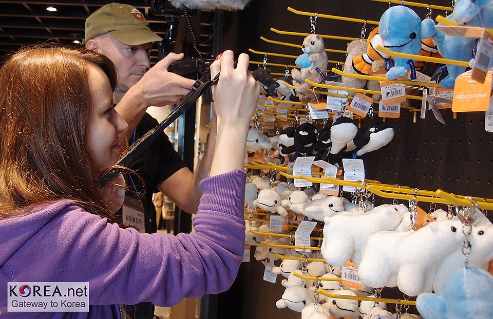
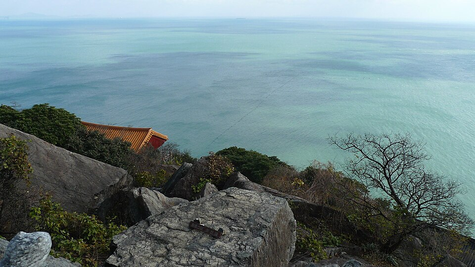
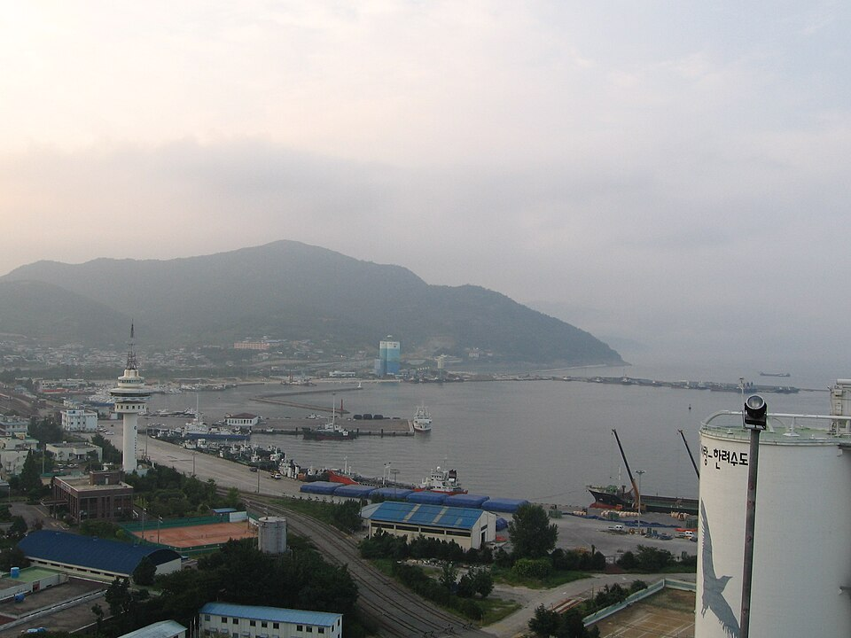
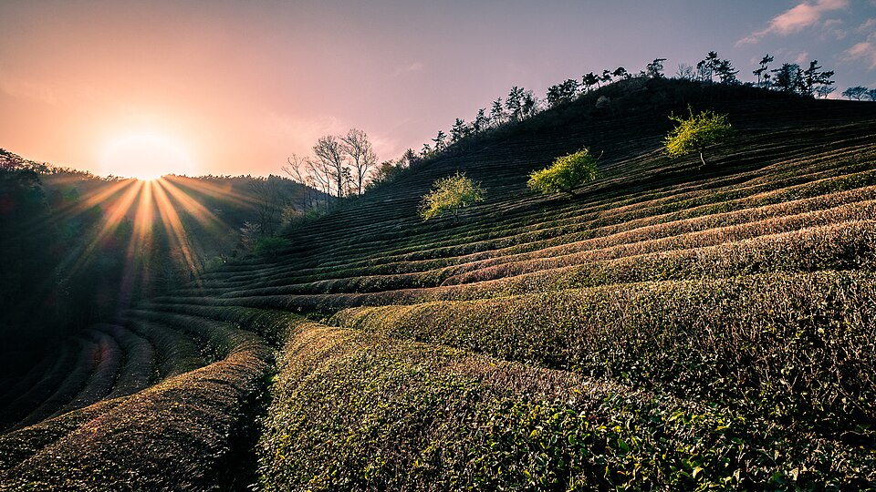

Lugares de los vídeos de Jeonnam: de Yeosu a Suncheon y Boseong
Guía del café, los mercados, los lugares de interés y el hotel que aparecen en dos vídeos sobre Yeosu, Suncheon y Boseong, en la provincia de Jeolla del Sur, con consejos sencillos para planificar tu ruta.
Jeonnam: mar, jardines y campos de té
La provincia de Jeolla del Sur (Jeonnam) es conocida por el mar nocturno de Yeosu, la bahía de Suncheon y los bosques de bambú de Damyang, y a menudo se la llama la tierra de la comida tradicional de Namdo, con muchos platos en una mesa. Entre los platos locales más destacados están el cangrejo de piedra marinado de Yeosu (dolgejang), los fideos junggan y la raya fermentada (hongeo) de Mokpo, las hamburguesas de costilla a la parrilla de Damyang (tteokgalbi) y el hanjeongsik de Namdo (una comida tradicional de varios platos). Esta guía reúne los lugares que aparecen en los vídeos «Por qué deberías visitar Yeosu» y «Jeolla-do: campo y granja de té verde», agrupados en la zona de Yeosu y la zona de Suncheon y Boseong.
Yeosu
Café Namuaegeurim
📍 Café Namuaegeurim · Naver Map · Google Maps
Un café donde puedes tomar algo con vistas a la isla de Odongdo. También vende recuerdos hechos a mano, así que es una parada práctica si buscas regalos.
Plaza Yi Sun-sin

📍 Plaza Yi Sun-sin · Naver Map · Google Maps
Una plaza pública donde puedes ver una réplica del famoso barco tortuga sin pagar entrada. Es un buen punto de partida para explorar el centro de Yeosu.
Aqua Planet Yeosu

📍 Aqua Planet Yeosu · Naver Map · Google Maps
Un acuario con belugas, focas y otra vida marina. Buena opción los días de lluvia o si viajas con niños.
Faro de Hamel y Museo Hamel
📍 Faro de Hamel y Museo Hamel · Naver Map · Google Maps
Cuentan la historia de Hendrick Hamel, un marinero neerlandés. Para los visitantes internacionales, ofrecen una mirada a los primeros contactos entre Corea y Europa.
Templo Hyangiram

📍 Templo Hyangiram · Naver Map · Google Maps
Un templo encaramado a un acantilado y muy conocido como lugar desde el que contemplar la salida del sol sobre el mar.
Pueblo de murales Angel
📍 Pueblo de murales Angel · Naver Map · Google Maps
Coloridos murales decoran sus callejuelas, junto con algunos cafés. Es un lugar agradable para pasear sin prisa y hacer fotos.
Mercado de pescado de Yeosu
📍 Mercado de pescado de Yeosu · Naver Map · Google Maps
Un mercado repleto de marisco fresco, donde puedes acercarte a la vida de esta ciudad portuaria.
Puerto de Yeosu

📍 Puerto de Yeosu · Naver Map · Google Maps
Los restaurantes de marisco se concentran alrededor del puerto, por lo que es un lugar natural para buscar platos locales como el dolgejang.
Parque Marino Guhang de Yeosu
📍 Parque Marino Guhang de Yeosu · Naver Map · Google Maps
Una zona junto al mar llena de restaurantes de marisco. Considéralo para cenar con vistas al mar nocturno de Yeosu.
Suncheon y Boseong
Jardín Nacional de la Bahía de Suncheon

📍 Jardín Nacional de la Bahía de Suncheon · Naver Map · Google Maps
Un gran jardín nacional pensado para caminar. Reserva tiempo suficiente para pasear sin prisa.
Campo de té verde Boseong Daehan Dawon

📍 Campo de té verde Boseong Daehan Dawon · Naver Map · Google Maps
Una plantación de té verde que encaja a la perfección con las escenas rurales y de granja de té del vídeo sobre Jeolla-do.
Hotel Da Vinci Suncheon
📍 Hotel Da Vinci Suncheon · Naver Map · Google Maps
El hotel que aparece en el vídeo. Vale la pena considerarlo como base si combinas Suncheon y Boseong en un mismo viaje.
Consejos para la ruta
Los lugares se dividen en dos zonas, Yeosu y Suncheon–Boseong, así que resulta más fácil dedicar un día a cada una. En Yeosu, agrupa las paradas junto al mar y el marisco, como la Plaza Yi Sun-sin, el mercado de pescado, el puerto y el Parque Marino Guhang, y termina con la cena junto al puerto mientras contemplas el mar nocturno. Si quieres ver la salida del sol en el templo Hyangiram, reserva una mañana temprano para ello. Para el tramo de Suncheon–Boseong, alojarte en Suncheon y combinar un paseo por el jardín con una visita a los campos de té Daehan Dawon hace que el itinerario sea más llevadero.
Lugares de los videos
- Café Namuaegeurim (나무애그림 카페) Bebidas, recuerdos hechos a mano, vistas a la isla de Odongdo Naver Map Google Maps
- Plaza Yi Sun-sin (이순신광장) Réplica del barco tortuga de entrada gratuita Naver Map Google Maps
- Aqua Planet Yeosu (아쿠아플라넷 여수) Acuario con belugas y focas Naver Map Google Maps
- Faro de Hamel y Museo Hamel (하멜등대 & 하멜기념관) Historia del marinero neerlandés Hendrick Hamel Naver Map Google Maps
- Templo Hyangiram (향일암) Templo en un acantilado famoso por las vistas de la salida del sol Naver Map Google Maps
- Pueblo de murales Angel (천사벽화마을) Callejuelas con murales coloridos y cafés Naver Map Google Maps
- Mercado de pescado de Yeosu (여수 수산시장) Marisco fresco Naver Map Google Maps
- Puerto de Yeosu (여수항) Restaurantes de marisco junto al puerto Naver Map Google Maps
- Parque Marino Guhang de Yeosu (여수 구항 해양공원) Zona junto al mar con restaurantes de marisco Naver Map Google Maps
- Jardín Nacional de la Bahía de Suncheon (순천만국가정원) Paseo por el jardín nacional Naver Map Google Maps
- Campo de té verde Boseong Daehan Dawon (보성 대한다원) Plantación de té verde Naver Map Google Maps
- Hotel Da Vinci Suncheon (다빈치호텔 순천) Alojamiento en hotel Naver Map Google Maps
Ubicaciones y horarios pueden cambiar: consulta el mapa antes de ir.
Vídeos relacionados


Más artículos
- Jeonbuk: comida y lugares de los vídeos de Jeonju, de bibimbap, mercados y alojamientos hanok
- Gyeongbuk: comida y lugares de los vídeos, cafés, alojamientos hanok y patrimonio de Silla en Gyeongju
- Chungcheong y Daejeon en pantalla: Bosque recreativo Jangtaesan y Torre Hanbit
- Seúl en vídeo: comida y lugares de vídeos de viaje recientes
- Gyeonggi e Incheon: restaurantes y lugares de los vídeos, de Chinatown de Incheon a la Fortaleza de Hwaseong
- Gangwon: comida y lugares de los vídeos, desde el puerto de Daepo en Sokcho hasta Chodang en Gangneung